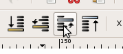
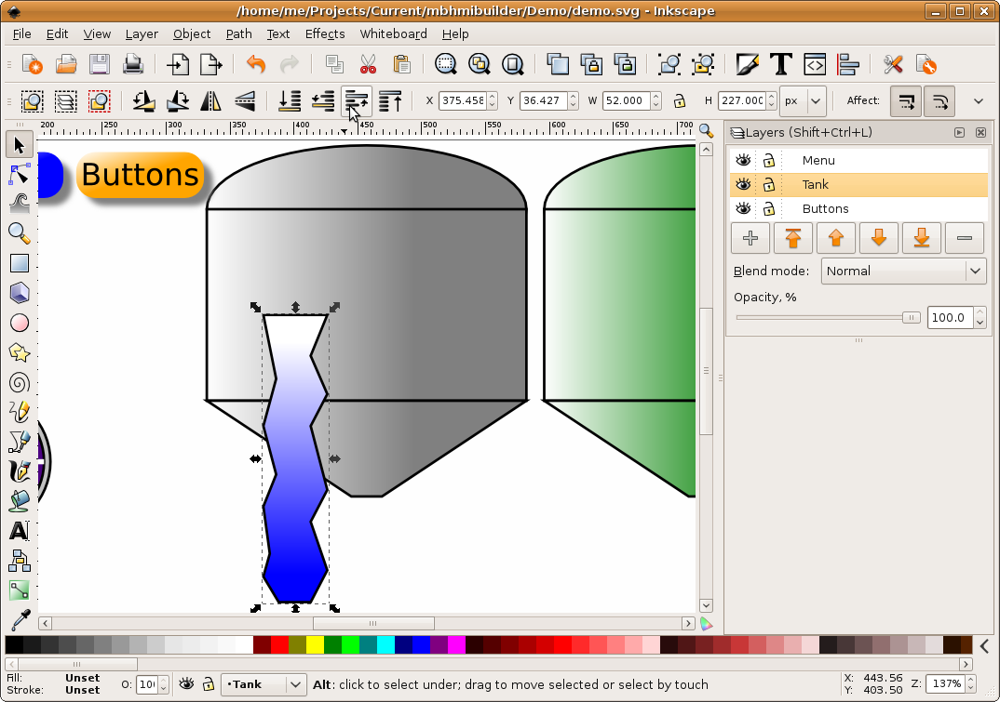

MBLogic
for an open world in automation
MBLogic
for an open world in automation
Object Stacking
You can also control the stacking order of objects in the same layer. For example, suppose you added objects to the drawing in the wrong order, so that objects which should be on top are appearing below other objects.
1) We added the tank background after we added the indicator column. Now the column appears behind the tank.
2) To correct this, select the column.
3) Then click on "raise selection one step".

4) The column is now on top of the tank background.
